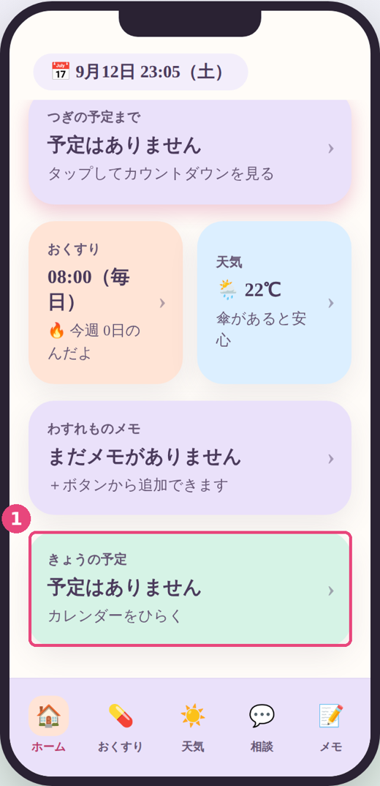
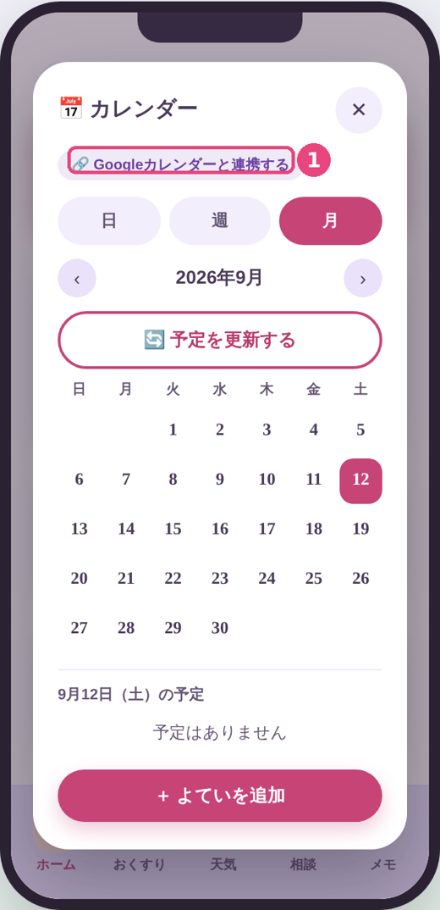
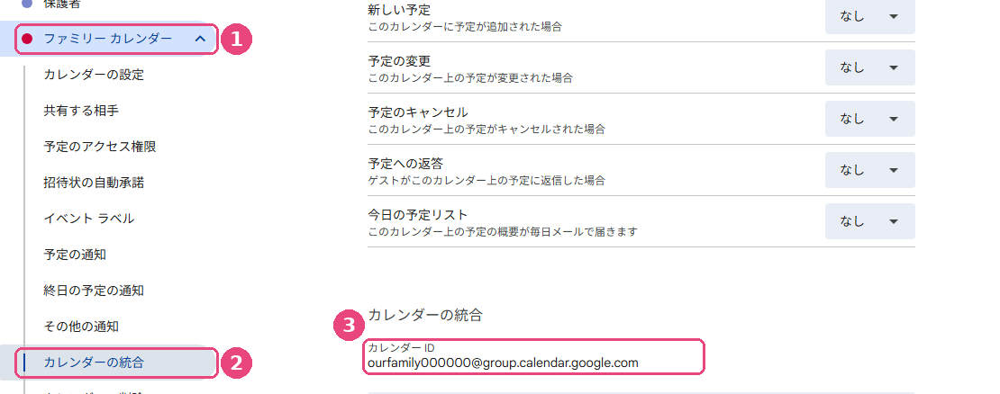
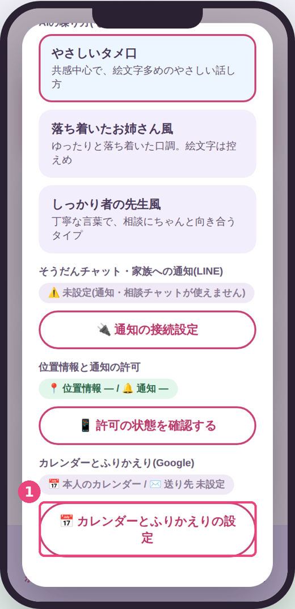
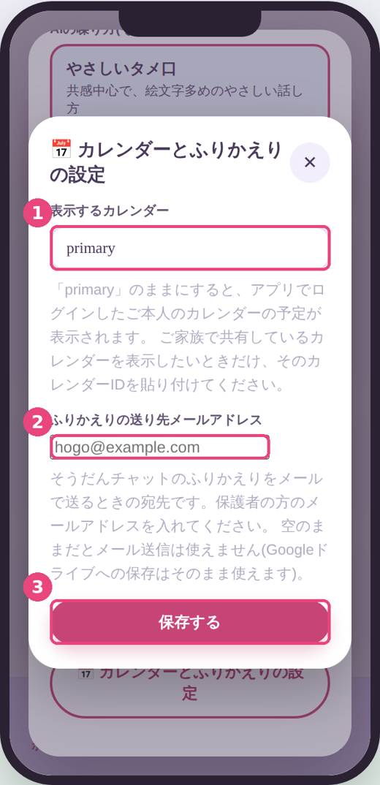

📅 Googleカレンダーをアプリにつなぐ
設定の最後、3番目の手順です。お子様の端末の「まいにちサポート」に、ご家庭のGoogleカレンダーの予定を表示するための設定です。ここでする作業は3つだけで、だいたい5分ほどで終わります。むずかしい登録や、新しいアカウントの作成は必要ありません。
※アプリの画面写真は2026年9月時点のものです。Googleのログイン画面は今後変わることがあります。表示が少し違っていても、やることは同じです。迷ったら遠慮なく開発者までご連絡ください。
この作業で何をするか(全体像)
- アプリの中で、ふだんお使いのGoogleアカウントでログインする
- どのカレンダーの予定を表示するかを決める
- 「そうだんチャットのふりかえり」を送るメールアドレスを入れる
お手元に、お子様の端末と、ご家庭で予定を管理しているGoogleアカウント(Gmailのアドレスとパスワード)をご用意ください。
Step 1. アプリでGoogleにログインする
- お子様の端末で「まいにちサポート」を開きます。
- ホーム画面を下までスクロールし、1「きょうの予定」のカード(その下に「カレンダーをひらく」と書いてあります)をタップします。
※画面のいちばん下に並んでいるのは「ホーム / おくすり / 天気 / 相談 / メモ」の5つで、カレンダーはここにはありません。

ホーム画面のいちばん下にあります。
- カレンダーの画面が開きます。上のほうにある 1「🔗 Googleカレンダーと連携する」を押します。
- Googleのログイン画面が出ます。ご家庭で予定を管理しているGoogleアカウントを選んで(または入力して)ログインしてください。

連携が終わると、この場所に「連携ずみ」と表示されます。
途中で「確認されていません」という画面が出たら
ログインの途中で、次のような少しびっくりする画面が出ることがあります。
⚠️ このアプリは Google で確認されていません
このアプリは、Google による確認が済んでいません。信頼できるデベロッパーの場合のみ続行してください。
これは故障でも、あやしいアプリでもありません。
このアプリはApp Storeで一般公開している市販アプリではなく、開発者が個人で作って、直接お渡ししているアプリです。Googleは「まだ審査を受けていないアプリ」に対して、念のためこの画面を出す仕組みになっています。
お使いのアカウントの情報が誰かに送られる、といったことはありません。ご不安な場合は、この画面のまま開発者にご連絡ください。
この画面の進み方
- 画面の左下あたりにある「詳細」(または「詳細設定」)を押します。
- 下に出てくる「まいにちサポート（安全ではないページ）に移動」を押します。
- 「まいにちサポート が Google アカウントへのアクセスを求めています」という画面になります。「次へ」を押します。
- 続いて、アプリに許可する内容の一覧が表示されます。
この画面に「
プライバシー ポリシーや利用規約へのリンクが表示されない理由をご確認ください」と出ることがあります。
これは、このアプリがまだGoogleの確認を受けていないため、Googleがリンクの表示を控えているだけで、ポリシーが無いわけではありません。プライバシーポリシーは
こちら（
https://mainichi-support.github.io/privacy.html）からいつでもお読みいただけます。
「許可」を求められる内容について
アプリがお願いしている権限は次の3つだけです。それぞれ、何に使うためのものかをご説明します。
| 権限 | アプリでの使いみち |
|---|
カレンダーの閲覧
calendar.readonly |
お子様のホーム画面・カレンダー画面に、ご家庭の予定を表示するために使います。読み取り専用なので、アプリが勝手に予定を追加したり消したりすることはできません。 |
メールの送信
gmail.send |
「そうだんチャットのふりかえり」を、保護者の方のメールアドレスに送るときだけ使います。ボタンを押したときにだけ動きます。 |
ドライブへのファイル作成
drive.file |
同じく「ふりかえり」をドライブに保存するときに使います。アプリが作ったファイルだけを扱える範囲の権限で、ドライブの中の他のファイルは見られません。 |
内容を確認したら「続行」(または「許可」)を押してください。カレンダー画面に戻り、予定が読み込まれれば連携は完了です。
※画面の表記はGoogle側の都合で変わることがあります。ボタンの名前が違っても、上の3つ以外の権限を求められることはありません。もし見慣れない権限が出た場合は、進めずに開発者までご連絡ください。
Step 2. 表示するカレンダーを決める
アプリは最初、いまログインしたご本人のカレンダーの予定を表示するようになっています。ご家庭の予定をそのアカウントで管理されている場合は、この手順はとばして構いません。
ご家族で「共有カレンダー」を作って予定を管理している場合だけ、次の設定をしてください。
共有カレンダーを表示したい場合
まず、そのカレンダーの「カレンダーID」を調べます。(パソコンかスマホのブラウザで行うのが簡単です)
- パソコンのブラウザで Googleカレンダーの設定画面 を開きます(カレンダー画面の右上「⚙️」→「設定」でも同じ画面です)。
- 画面左側の「マイカレンダーの設定」の中から、1表示したいカレンダーの名前を押します。下に項目が開きます。
- 2「カレンダーの統合」を押します。
- 3「カレンダーID」の欄に
....@group.calendar.google.com のような文字列があります。これをコピーします。

すぐ下にある「公開URL」「埋め込みコード」は使いません。必要なのは「カレンダーID」の1行だけです。
スマホのGoogleカレンダーアプリからは、カレンダーIDを見ることができません。パソコンか、スマホのブラウザで「PC版サイト」を表示してお試しください。
つづいて、アプリに貼り付けます。
- お子様の端末で「まいにちサポート」を開き、ホーム画面右上の「⚙️」を押します。
- 設定画面を下にスクロールし、1「📅 カレンダーとふりかえりの設定」を開きます。

⚙️の設定画面を下へスクロールすると出てきます。
- 1「表示するカレンダー」の欄に、先ほどコピーしたカレンダーIDを貼り付けます。
- 3「保存する」を押します。カレンダー画面に戻ると、共有カレンダーの予定が表示されます。

1 表示するカレンダー ／ 2 ふりかえりの送り先(次のStep 3で使います) ／ 3 保存する
大切な確認: 共有カレンダーの予定を表示するには、Step 1でログインしたGoogleアカウントが、そのカレンダーを見られる状態になっている必要があります。まだ共有していない場合は、Googleカレンダーの「設定と共有」→「特定のユーザーとの共有」から、そのアカウントを追加しておいてください(権限は「予定の表示(すべての予定の詳細)」で十分です)。
Step 3. ふりかえりの送り先を入れる
「そうだんチャットのふりかえり」は、お子様がAIと話した内容を、あとから保護者の方が読み返せるようにメールで送る機能です。その送り先のメールアドレスを登録します。
- ホーム画面右上の「⚙️」→「📅 カレンダーとふりかえりの設定」を開きます(上の図と同じ画面です)。
- 2「ふりかえりの送り先メールアドレス」の欄に、保護者の方のメールアドレスを入力します。
- 3「保存する」を押します。
※ここが空のあいだは、メールでの送信は使えません(誤って他の方に送ってしまわないための仕組みです)。Googleドライブへの保存は、空のままでもお使いいただけます。
うまくいかないときは
Q. カレンダーに予定が出てきません
まず、⚙️の「カレンダーとふりかえりの設定」を開き、「表示するカレンダー」の欄をご確認ください。primaryと書かれている場合は、ログインしたご本人のカレンダーを見にいっています。ご家族の共有カレンダーを見たい場合は、Step 2の手順でカレンダーIDを設定してください。
カレンダーIDを設定済みなのに出てこない場合は、そのカレンダーがログイン中のアカウントに共有されていない可能性が高いです(Step 2の最後の「大切な確認」をご覧ください)。
Q. 「アクセス権の更新に失敗しました」と出ます
連携の有効期限が切れたか、Google側で許可が取り消された可能性があります。ホーム画面の「きょうの予定」からカレンダーを開き、上のほうの「🔗 Googleカレンダーと連携する」からもう一度ログインし直してください。
Q. 警告画面から先に進めません
「詳細」という小さな文字が、画面の左下あたりにあります。押すと、下に「(アプリ名)に移動」というリンクが出てきます。見つからない場合は、画面を少し下にスクロールしてみてください。
Q. 子どもの端末に、親のGoogleアカウントでログインしても大丈夫ですか？
はい、大丈夫です。むしろご家庭の予定が保護者の方のカレンダーに入っている場合は、そのほうが設定が簡単です。ただし、その端末からはそのアカウントのカレンダーの予定が見える状態になりますので、お子様に見せたくない予定がある場合は、お子様用の共有カレンダーを別に作って、そちらを表示する方法をおすすめします。
Q. あとから連携をやめたくなったら？
Googleアカウントの「アカウントにアクセスできるアプリ」のページから、いつでもこのアプリのアクセスを取り消せます。取り消すと、アプリにカレンダーの予定が表示されなくなります。
お預かりする情報について
このアプリは、カレンダーの予定をお子様の端末の中に読み込んで表示するだけです。開発者のサーバーに予定の内容が送られたり、保存されたりすることはありません。「ふりかえり」のメールも、お子様の端末から、ご登録いただいたアドレスへ直接送られます。
← 設定ガイドの目次にもどる